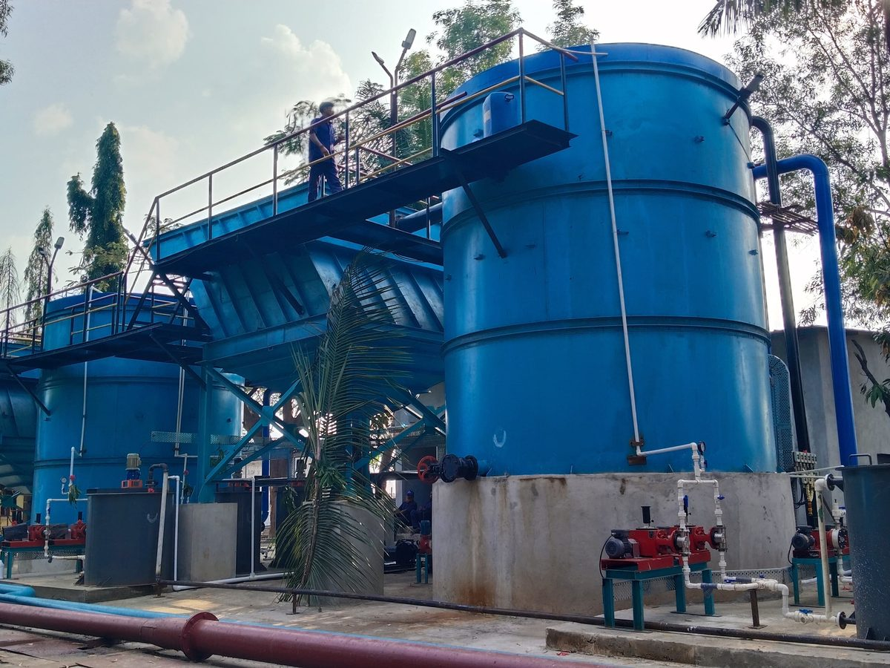

Distillery Condensate Polishing
For MEE and other process condensate from molasses-, grain- and cane-juice-based distilleries, which typically carry high COD and volatile acids.
- Reduction of COD, BOD and volatile acidity
- Water for fermentation, dilution & cooling tower
- Upgrading of existing distillery CPUs